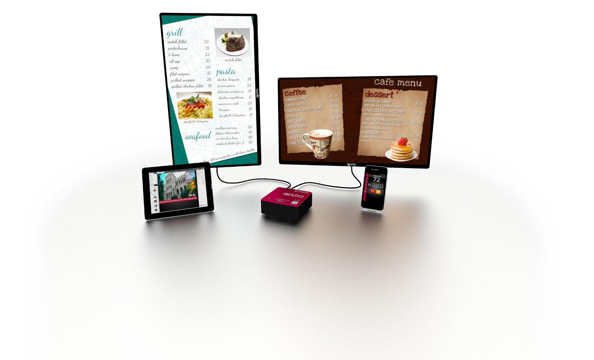

Design
Payal wasn't a huge fan of this bit, so I think it would be best served as a timeline.
Digital Signage
Researched a low cost, replaceable linux device for a new digital signage platform, based off a Raspberry Pi. The Raspberry Pi was only new at the time and didn't have the software required, so other hardware was used instead.
Signchro
Network monitoring tool
Changed to Arduino based, restricted it to non-display and relay control, proved web connectivity via ethernet board, expanded with a few more sensors and a web based configurator, and finalised an enclosure. Initial pcb design and fabrication, and assembly testing.

Discover Elbeano
ESP32-cam power cycle timer
Based off a 555 chip with a few discrete components, using leftover enclosures from initial project.

Read about it
Timer board changed to ATTiny85
Allow for more accurate timings, added wifi connectivity via ESP12F to send sensor data without the ESP32-Cam, created cloud app to send and receive data, initial pcb layout
See the technical bitsATTiny85 expanded
Added bios-like functionality, added dedicated app chips, power finalisation, pcb finalisation and initial print
Working it all outSub board theory, prototype
Added the idea of making this board and its power options the base for sub boards to give it much more capability.
PrototypeSaaS, firmware
With the device proven and costs worked out, fixed up a few issues within the firmware and got the SaaS working nicer
Software